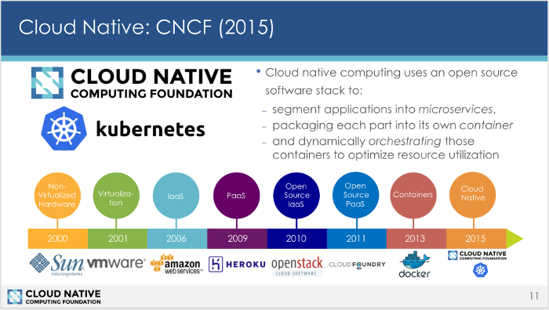
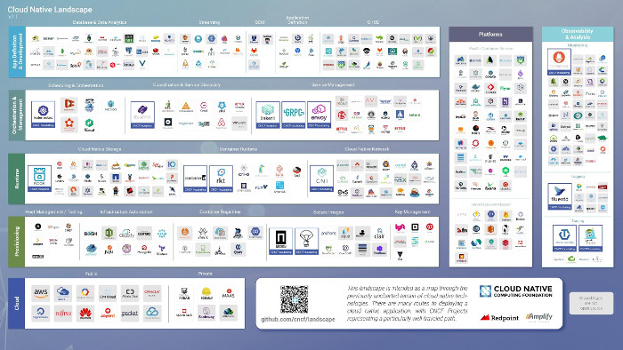

Kubernetes 是如何成为传统应用迁移的终极方案的
其实你根本就没有必要将自己的单体应用改写为现代的版本，使用云原生技术可以将之优雅的转变为微服务架构。
计算机基础设施的变迁史
在互联网的早期，如果你来运行应用程序的话，需要购买或租用硬件。无论它是机架式的还是塔式的服务器，这不重要，重要的是每一个应用都需要一台服务器来运行，所以是非常昂贵的。在2001年，VMware推出了虚拟化软件，允许用户在同一硬件上运行多个应用程序。这也就意味着将一台服务器分割为多个，而且分割后的服务器是完全可以独立运行应用程序的。这对于用户的成本来说，是极大的节约。
时间过得很快，转眼就是2006年，亚马逊普及了基础设施即服务（IaaS），因为推出了颠覆性服务——AWS的弹性计算云（EC2），你不再需要购买你自己的硬件。你甚至都不需要去担心管理那些运行你的应用程序的虚拟机。而你实际上正在租用运行你的服务所需的计算环境和底层基础架构。你按小时来付费，像租用开会用的会议室一样。这样就可以让使用它们的公司，能够充分的优化自己的资源以节约成本，只需购买自己所需要的计算资源即可。要知道，IaaS 的出现是具有革命性的变革的，它的直接结果就是让计算的成本下降很多。
三年之后，Heroku提出了平台即服务（PaaS）的想法。PaaS 通过屏蔽了需要管理虚拟机操作系统重新抽象了一层。Heroku神奇地简化了部署应用程序的新版本；让应用变成了只需要输入 git push heroku 这样简单的命令即可。在Heroku当时诞生了很多现在知名的互联网公司。
这些进步使得以任何规模（大或小）部署应用程序变得更加容易和成本低廉。这就直接导致了许多的创新出现，并极大的推动了企业在处理基础设施上的实质转变，从而将其从资本支出转移到可变的运营支出。
以上所有看起来一切都很美好，不知道读者看到这里是否意识到？这其中有一个非常大的问题。那就是所有的这些技术提供商都是闭源的、专有的公司。这就存在一个现象：单独厂家锁定！在各个环境之间移植应用程序是非常困难的事情。混合和匹配内部部署和基于云的应用程序几乎是不可能的。
而这个大问题就需要开源来解决！不过也是时机正好。这次依旧是基于Linux之上，即 Docker 和 Kubernetes，而后者更是被人们称之为云时代的Linux。
开源来拯救世界
Docker在2013年出现，将容器的概念迅速扩散。正如当年集装箱点燃了全球的货运革命一样，当时的船运公司使用这种大型的金属集装箱替代了过去纷杂的货运装置，以适应在卡车、船舶、铁路三者之间匹配。装什么无所谓，重要的是装载本身有了标准。
和现实世界的集装箱运输一样，Docker 容器创建了对于应用最为基本的封装，使之可以运行在任何的基础设施平台上。一时之间，Linux容器风靡世界。到今天为止，几乎所有的企业都有意愿将他们的应用跑在容器之上，即使是他们自己的内部的服务器，也同样在考虑。尽管容器仅仅是管理现代的应用程序的一种更好的方式，因为它们通常被分割成无数的组件（微服务），但仍然需要能够在服务器之间进行容易的移植和访问。
技术的本质，通常是解决了一个问题，而又引入新的问题，如此反复。Linux容器也不例外，它虽然封装的很好，但是它给DevOps团队带来前所未有的挑战，它在应用程序的移植、部署的活动中增加的了更多动态的东西。于是Kubernetes应时而生。
2015年，Google 以开源的方式发布了Kubernetes项目，它是Google内部系统Borg的实现。Google 联合Linux基金会成立了云原生计算基金会（CNCF），Kubernetes是此基金会下的第一个种子项目，Kubernetes迅速成为历史上发展最快的开源项目之一，目前拥有数十家公司和组织中成千上万的贡献者。
是什么让Kubernetes如此不可思议的快速增长？恐怕最主要的原因莫过于Kubernetes是Google内部集群系统Borg的再现。这个世界上还很少有哪家的数据中心有Google的规模，Borg 系统平均每周会推出大约20亿个容器，这也就是说每秒钟都会新启动3300个容器。大家可以想象一下高峰期的时候，会比这个数字大得多。是的，没错，Kubernetes就是诞生在这样一个强大的系统之上的，经历过严峻考验的、以应对比这个规模更大的负载！

在确定了 Docker 和 Kubernetes 作为核心之后，CNCF扩展了更多的云原生项目，到目前为止，CNCF拥有大大小小的项目数量达到了369，其中较为重要和成熟的项目有：Kubernetes, Prometheus, OpenTracing, Fluentd, Linkerd, gRPC, CoreDNS, rkt, containerd, Container Networking Interface, CoreDNS, Envoy, Jaeger, Notary, The Update Framework, Rook, 和 Vitess.

然而，作为后起之秀的CNCF，从以往过去的开源项目汲取了很多的经验，CNCF一直非常谨慎，以确保只选择那些能够很好地协同工作并能满足企业和创业公司需求的技术。而且这些技术正在大量采用。
企业拥抱开源技术最大的原因之一就是避免供应商锁定，并实现在多个云平台之间，以及云平台和私有的基础设施之间的容器的平滑移植。基于开源，最终用户可以很容器的切换供应商，也可以使用混合的云平台。如果用户拥有足够的技术能力，甚至都可以自己来进行管理。
将单体应用分片
Kubernetes和Docker 不仅增强了用户管理大规模负载的能力，而且还能够将大型的、单体应用更加容易的分割为更加易于管理的微服务。分割之后的服务，具备自我管理的功能，可以随时根据需要进行伸缩。微服务还支持更快的部署和更快的迭代，以符合现代持续集成实践。基于Kubernetes的业务流程可以通过动态管理和调度这些微服务来提高效率和资源利用率。它还增加了非凡的弹性水平。用户根本不必担心容器故障，且可以继续按需求进行伸缩。
Kubernetes 迅速成为云原生编排系统的首选，它也成为了开源历史上速度最快的开发项目之一。并得到包括AWS，微软，红帽，SUSE等在内的主要厂商的支持。
所有这些都对企业有直接的影响。具Puppet公司举行的2016年度DevOps形势报告称，高性能的云原生架构可以有更频繁的开发，更短的交付周期，更低的故障率以及更快的故障恢复。这意味着功能可以更快地推向市场，项目可以更快地发挥作用，而工程和开发团队的等待时间则少得多。在今天，如果您要从头开始构建新的应用程序，那么云原生应用程序体系结构就是实现它的最佳途径。同样重要的是，云原生会思考如何利用现有（棕地）应用程序提供了一个路线图，并将它们慢慢转化为运行在容器和Kubernetes上的更为高效和更具弹性的基于微服务的架构。棕地、单体应用其实是构成当今所有软件产品的大部分内容。
单体应用是站在云原生应用的对立面的，它们意味着的陈旧、代价昂贵、臃肿、紧耦合、且不够稳定。问题在于:如何将这些单体应用拆分为微服务架构？ 用户或许考虑过重写所有的那些大型的旧版应用，而现实的情况告诉你：大多数重写都以失败告终。你试图重写的第一个系统，即使在你试图替换它时也是存在的，而且一直都在进化。有时候，第一个系统发展得太快，你永远无法赶上。
当然，用户也可以采用更加有效的方法来解决此问题。首先，停止向现有的单体应用程序添加重要的新功能。这里有一个“提升和转移”的概念，也就意味着用户可以将一个需要几GB内存的应用使用容器来封装。是不是很简单！
一个将单体应用转换为容器的典型实例
Ticketmaster 就是实现单体应用转换为容器典型的实例。它的代码运行在非常古老的PDP-11中，首先将创建了一个PDP-11的模拟器，然后使其在Docker中运行，这样就间接的将应用也容器化了。我们知道Kubernetes有一项功能叫做Stateful set（也就是过去的PetSets），此功能可以将某些容器固定的运行在特定的机器中，以确保它能够保持正常运行。
另外，Ticketmaster 还有一个特殊的问题：每当开始售票的时候，当所有人都来访问的时候，这无异于就是发动了分布式拒绝服务（DDoS）攻击。该公司需要一套前端服务器，可以扩展和处理这种需求，而不是试图将其写入他们的旧版应用程序中。最终的解决办法是,在旧版应用程序的前面部署了一套新的基于容器的微服务，进而最大限度地减少了传统体系结构中的持续蔓延。
当你试图将工作负载从旧版程序迁移到容器的时候，可能还想将某些功能从应用程序转移到微服务中，又或者是使用微服务来添加新的功能，而不是添加到旧的代码库中。举个例子，如果您想添加OAuth这项功能，可能只需一个简单的Node.js应用程序可以放在你的旧版应用程序前面即可。如果你有一个高性能敏感的任务，你可以在Golang中编写它，并将其设置为一个驻留的单体应用前，使得API驱动的服务能够生效。仍然可以将API调用返回到你现有的单体应用。
这些新功能可以由不同的团队用更现代的语言编写，这些团队可以使用自己的一套库和依赖关系，并开始拆分原有的单体应用。
来自北卡罗来纳的KeyBanc无疑是这方面最为生动的案例，它在传统的Java应用程序之前部署Node.js应用程序服务器来处理移动客户端。这比为旧版单体应用添加代码，显得更为简单，也更高效，而且有助于确保其基础架构在未来也能良性发展。
真正的云原生是众多项目互补的集合
如果作为用户的你正在打算拥抱云原生技术的话，那么就应该考虑一下项目互补来交付核心的功能。举个例子，在云原生的环境中，最重要的莫过于监视、追踪和日志。此时就可以考虑诸如Prometheus、OpenTracing 和 Fluentd，Linkerd 是一个service mesh，其可以支持更复杂的路由。gRPC是一个非常高性能的API系统，完全可以替代原有的JSON，且获得更高性能。CoreDNS是一个服务发现平台。所有这些项目均是CNCF的一分子，在未来CNCF会增加更多的项目，为拥抱云原生技术的用户拥有更多选择。
无论是绿地、棕地，还是其它什么地，均可云原生
作为开发者的你，或许此时会考虑迁移旧有的单体应道到云原生的微服务，那么恭喜你，你根本毋须完全另起炉灶新写一个，或者重新改写。诸如 Kubernetes 这样的CNCF技术非常拥抱旧有的应用程序，这对于所有的公司和企业来说，都是应该走的进化之路。用户既可以使用Kubernetes来构建一套全新的应用，也可以逐步的将原有的单体应用转化为微服务应用，以在不久的未来担当重要业务的支撑。
注解： 关于绿地（greenfeild)棕地（brownfeild)的解释： 绿地是指软件完全是不受任何原有系统干扰的新的项目，而棕地则表示，在开发新的系统时，要处处引进和考虑旧的系统。
关于原作者
Swapnil Bhartiya 是一名专业的记者和编辑，有超过报道企业开源12年的职业经历。
本文由作者Swapnil Bhartiya 发表在Opensource.com上：How Kubernetes became the solution for migrating legacy applications。由开源之道精心翻译共享。本文在Creative Commons BY-SA 4.0许可证下发布。